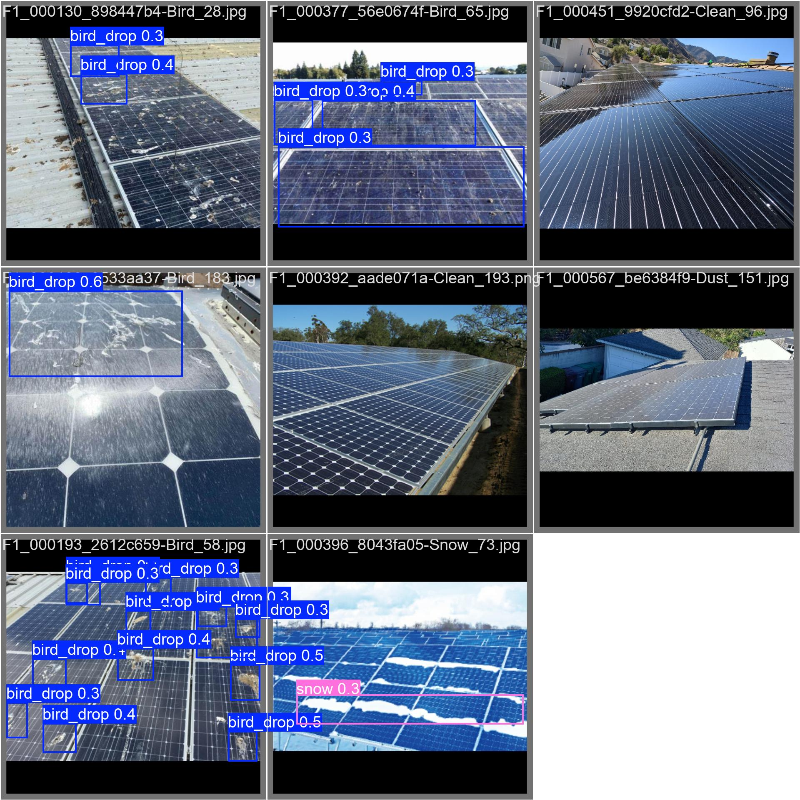
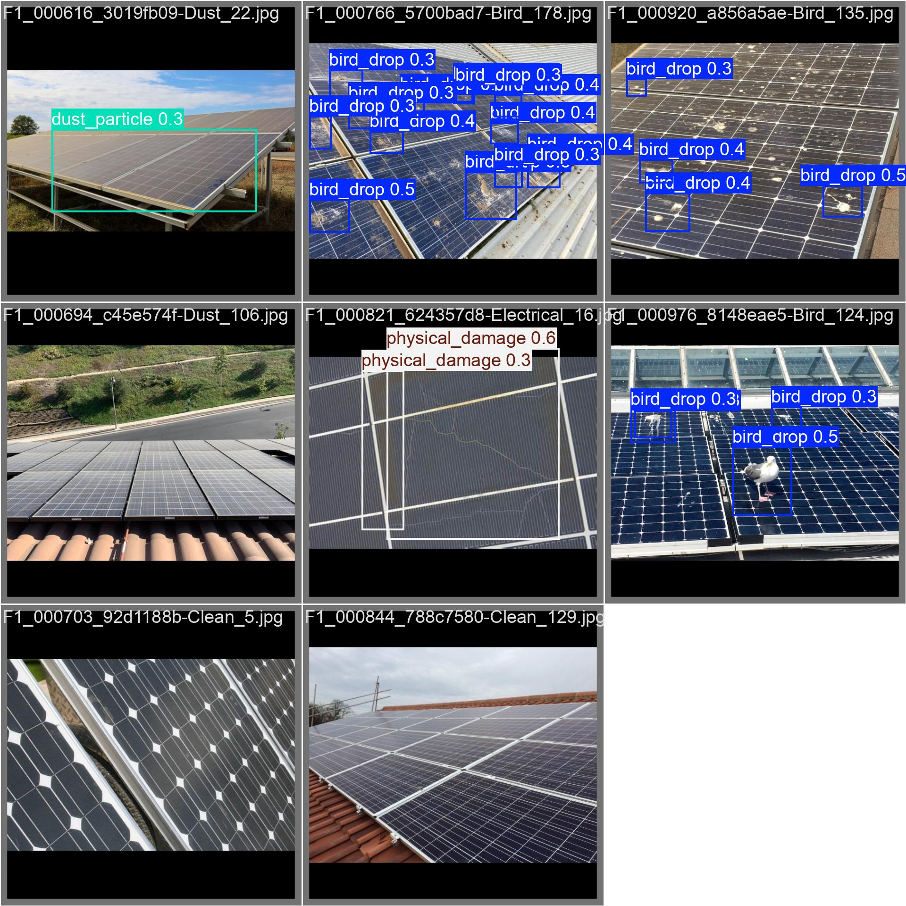
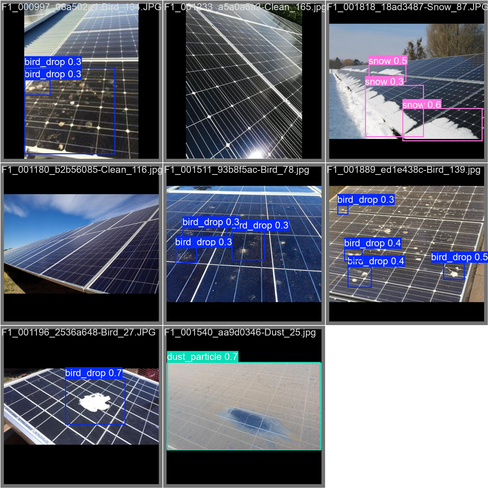

Danışman Öğretim Üyesi:
Prof. Dr. Şafak SAĞLAM
Hazırlayan Öğrenci:
İbrahim Tarık ESER
170520037
Güneş enerjisi santrallerinde (GES) verimliliği düşüren temel faktörlerin başında paneller üzerindeki fiziki hasarlar (kırıklar), çevresel kirlilikler (toz, kuş pisliği) ve elektriksel anormallikler (hotspot) gelmektedir. Bu bitirme projesi kapsamında, bahsedilen anormalliklerin otonom bir şekilde tespit edilebilmesi amacıyla Derin Öğrenme (Deep Learning) tabanlı bir nesne tespiti (object detection) sistemi geliştirilmektedir. Çalışmada YOLO (You Only Look Once) algoritmasının güncel versiyonlarından faydalanılarak bir model eğitilmiş ve gerçek zamanlı video akışları üzerinden analiz yapabilen asenkron bir kullanıcı arayüzü tasarlanmıştır. Bu ara raporda, projenin mevcut durumuna kadar yapılan literatür araştırmaları, veri ön işleme adımları, model eğitim süreçleri ve elde edilen ilk bulgular bilimsel araştırma tekniklerine uygun olarak sunulmuştur.
Yenilenebilir enerji kaynaklarının kullanımı küresel çapta hızla artarken, güneş panellerinin bakım ve işletme süreçlerinin optimizasyonu büyük bir önem kazanmıştır. Paneller üzerinde zamanla oluşan çevresel faktörler (kuş pislikleri, tozlanma vb.) ve donanımsal arızalar (mikro-çatlaklar, hotspotlar) enerji üretiminde ciddi verim kayıplarına yol açmaktadır. Geleneksel insan gücüne dayalı inceleme yöntemleri, büyük ölçekli santrallerde hem zaman alıcı hem de yüksek maliyetli olmaktadır. Bu projenin amacı, yapay zeka ve bilgisayarlı görü (computer vision) tekniklerini kullanarak güneş panellerindeki bu hataları hızlı, otonom ve yüksek doğrulukla tespit edecek uçtan uca (end-to-end) bir yazılım mimarisi geliştirmektir.
Projenin akademik detaylarına geçmeden önce, konuya aşina olmayan okuyucular için projenin başlangıç noktası ve sistemin temel işleyiş mantığı aşağıda özetlenmiştir.
Güneş paneli hatalarının tespiti üzerine literatürde birçok çalışma bulunmaktadır. Geleneksel yöntemler genellikle termal kameralar (termografi) ve elektrolüminesans (EL) görüntüleme üzerine odaklanırken [1], son yıllarda İnsansız Hava Araçları (İHA) ile entegre edilmiş kameralar üzerinden derin öğrenme algoritmalarının kullanımı yaygınlaşmıştır.
Örneğin, YOLO ve türevi Evrişimli Sinir Ağı (CNN) mimarilerinin fotovoltaik paneller üzerindeki sıcak noktaları (hotspot) ve fiziksel hasarları tespit etmede yüksek doğruluk oranlarına ulaştığı kanıtlanmıştır [2]. Sınırlı veri setleri ile model eğitimindeki zorlukları aşmak için literatürde veri artırma (data augmentation) yöntemleri sıklıkla kullanılmaktadır [3]. Geometrik dönüşümler ve gürültü ekleme gibi veri artırma yöntemlerinin nesne tespit modellerinin başarımını (mAP - mean Average Precision) önemli ölçüde artırdığı önceki çalışmalarda gösterilmiştir [4]. Bu proje, mevcut literatürdeki bu derin öğrenme ve veri hazırlama yöntemlerini temel alarak; hem modelin dayanıklılığının (robustness) artırılmasını hem de elde edilen modelin eşzamanlı (real-time) çalışan çok iş parçacıklı (multi-threaded) yerel bir uygulamaya entegre edilmesini hedeflemektedir.
Projenin gerçekleştirilmesinde kullanılan donanımsal ve yazılımsal altyapılar ile uygulanan metodolojik adımlar aşağıda detaylandırılmıştır.
4.1. Veri Seti ve Veri Artırımı (Data Augmentation): Yapay zeka modelinin genellenebilirliğini artırmak için çeşitli kaynaklardan elde edilen panel görüntüleri kullanılmıştır. Eğitim verisi eksikliğini gidermek ve modelin farklı ortam şartlarındaki performansını yükseltmek amacıyla Albumentations kütüphanesi [3] kullanılarak sentetik veri artırımı yapılmıştır. Proje dizinindeki scripts/augment.py kodları üzerinden fotoğraflara rastgele döndürme, parlaklık değişimi ve gürültü ekleme işlemleri uygulanmıştır.
4.2. Yapay Zeka Modeli ve Eğitim Süreci: Nesne tespiti aşamasında, gerçek zamanlı tespit hızına ve yüksek doğruluk oranlarına sahip olması sebebiyle Ultralytics tabanlı YOLO11 mimarisi seçilmiştir [2]. Model, proje kapsamında tanımlanan anormallik etiketleri üzerinden eğitilmiştir. Eğitim süreci boyunca aşırı öğrenmeyi engellemek adına veriler; eğitim ve doğrulama setleri olarak yapılandırılmıştır.
4.3. Sistem Mimarisi ve Arayüz (GUI): Eğitilen modelin kullanılabileceği bir platform sunmak için Python dilinde Tkinter ve OpenCV kütüphaneleri [5] yardımıyla bir grafik kullanıcı arayüzü tasarlanmıştır. Sistem, video akışını LIFO yapısında bir kuyruk mimarisiyle işleyerek analizleri asenkron biçimde (multi-threading) ekrana yansıtmakta ve video kaydı alabilmektedir.
Bugüne kadar yürütülen çalışmalar neticesinde, projenin Faz 1 (Eğitim Altyapısı) ve Faz 2 (Uygulama Arayüzü) kısımları kodlanmış ve temel mimari testleri tamamlanmıştır. Yapay zeka modelinin son versiyonu (v1.0.3) doğrulama seti üzerinde test edilmiş ve sayısal metrikler çıkarılmıştır.
Model Test Sonuçları Değerlendirmesi: Test sonucunda elde edilen verilere göre modelin mAP50 değeri %70.5, Precision (Kesinlik) değeri %72.2, Recall (Duyarlılık) değeri %67.0 ve genel başarı ortalaması olan F1-Score değeri %69.5 olarak ölçülmüştür.
Aşağıda, modelin doğrulama seti üzerindeki tahminleme başarısını gösteren bazı görsel sonuçlar sunulmuştur.



Şu ana kadar yapılan çalışmalarla projenin yapay zeka ve arayüz altyapısı (pipeline) tamamen oluşturulmuş, test metriklerinden elde edilen ilk veriler modelin öğrenme kapasitesinin tatmin edici düzeyde olduğunu doğrulamıştır. Test sonuçlarından alınan geri bildirimlere göre planlanan sonraki çalışma adımları şunlardır:
[1] Buerhop-Meyo, C., vd. (2014). "Reliability of IR-imaging of PV-plants under operating conditions". Solar Energy Materials and Solar Cells, 122, 126-133.
[2] Jocher, G., vd. (2023). "Ultralytics YOLO". GitHub Repository. https://github.com/ultralytics/ultralytics
[3] Buslaev, A., vd. (2020). "Albumentations: Fast and Flexible Image Augmentations". Information, 11(2), 125.
[4] Shorten, C., & Khoshgoftaar, T. M. (2019). "A survey on Image Data Augmentation for Deep Learning". Journal of Big Data, 6(1), 1-48.
[5] Bradski, G. (2000). "The OpenCV Library". Dr. Dobb's Journal of Software Tools.
[6] Roboflow Universe. "Solar Panel Detection Dataset". Roboflow Veri Seti. https://universe.roboflow.com/solar-panel-detection-bgiuk/solar-panel-detection-a5bec/dataset/
[7] Houhou34. "PV-Multi-Defect Dataset". GitHub Repository. https://github.com/houhou34/PV-Multi-Defect/blob/main
[8] Eser, İ. T. "Güneş Panelleri Özgün Görsel Veri Seti". Bireysel Saha Çalışmaları ve Veri Toplama.